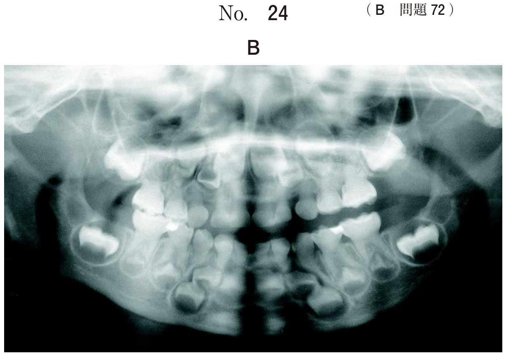
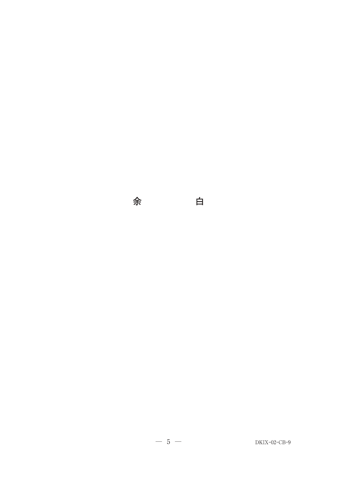
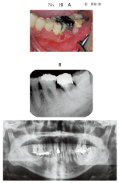
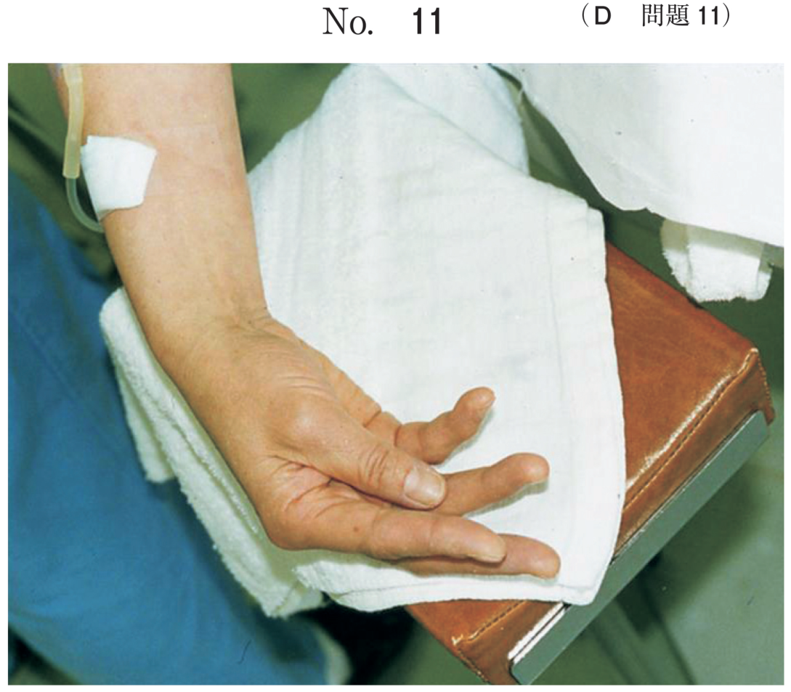
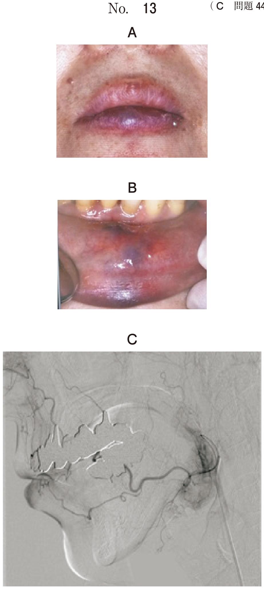
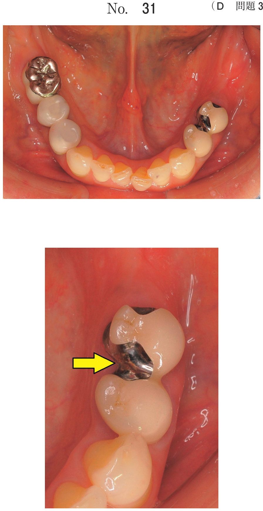
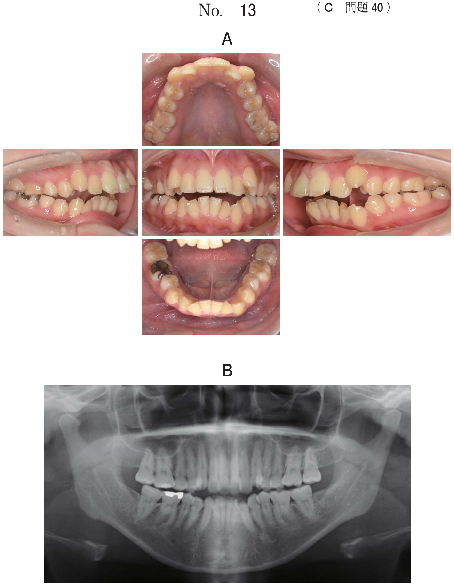
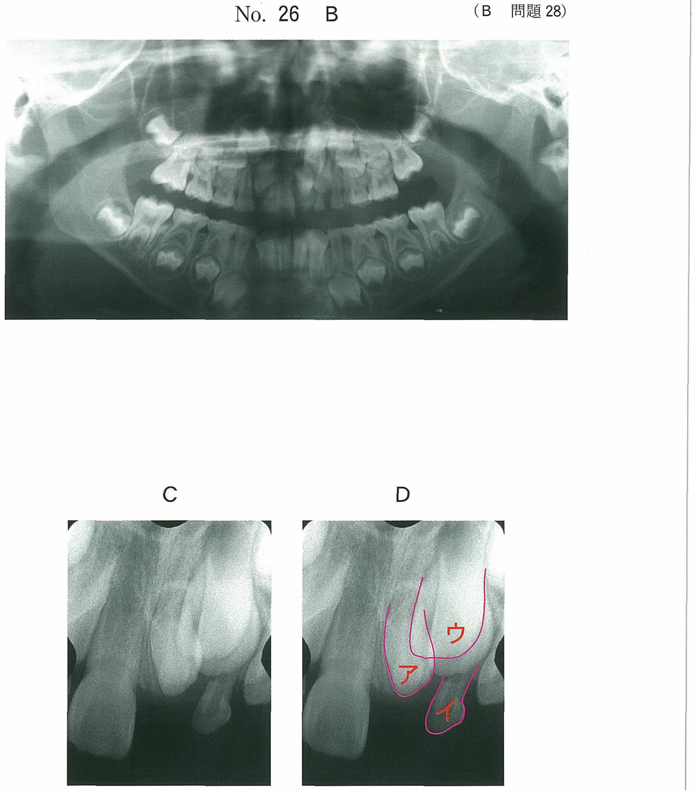

上皮性悪性腫瘍：治療
治療の三本柱
口腔癌の治療は以下の3つを単独または組み合わせて行う。
| 治療法 | 概要 | 適応 |
|---|---|---|
| 外科療法 | 腫瘍の切除 | 根治的治療の中心。全Stageで適応 |
| 放射線療法 | 外部照射・組織内照射 | 早期癌の根治、進行癌の術前・術後補助 |
| 化学療法 | 抗腫瘍薬の投与 | 進行癌への術前補助、遠隔転移例 |
- 単独で行われることが多いのは外科療法と放射線治療
- 温熱療法・免疫療法・遺伝子治療は単独での根治には用いられない
外科療法：術式選択
舌癌の術式
| 術式 | 適応 |
|---|---|
| 舌部分切除 | T1〜T2の早期例。舌の1/3以下の切除 |
| 舌半側切除 | T2〜T3。正中線を越えない例 |
| 舌亜全摘・全摘 | 進行例。再建術（前腕皮弁など）が必須 |
舌癌T1（≤2cm）でリンパ節転移なし → 舌部分切除が標準。舌半側切除は過剰。
下顎歯肉癌の術式
| 術式 | 適応 | 判断のポイント |
|---|---|---|
| 下顎辺縁切除 | 骨浸潤が表層に限局 | 下唇の感覚異常なし（下歯槽神経に浸潤していない） |
| 下顎区域切除 | 骨深部まで浸潤 | 下唇の知覚鈍麻あり（下歯槽神経への浸潤を示唆） |
- 下唇の知覚鈍麻なし → 下歯槽神経への浸潤なし → 辺縁切除
- 下唇の知覚鈍麻あり → 下歯槽神経への浸潤あり → 区域切除
- 辺縁切除は下顎骨の連続性が保たれる。区域切除は下顎骨を離断する
上顎歯肉癌・上顎洞癌の術式
| 術式 | 適応 |
|---|---|
| 上顎部分切除 | 上顎歯肉癌で上顎洞への浸潤が限局 |
| 上顎全摘出術 | 上顎洞癌で広範な浸潤がある場合 |
放射線療法
組織内照射（小線源治療）
放射性同位元素（Ir-192など）を腫瘍内に直接刺入し、局所に高線量を照射する方法。
- 主に舌癌T1〜T2 N0M0の早期例に適応
- 利点：局所制御率が高い、運動機能を温存できる
- 味覚低下は起こりうる（利点ではない）
- 粘膜炎は防げない（放射線の副作用として発生する）
- 頸部転移は防げない（原発巣への局所治療であり、リンパ節転移の予防効果はない）
外部照射
体外から放射線を照射する。術前照射（腫瘍の縮小）や術後照射（残存腫瘍の制御）として用いられる。
化学療法
口腔癌に用いる主な抗腫瘍薬
| 薬剤 | 分類 | 特徴 |
|---|---|---|
| 5-FU（フルオロウラシル） | 代謝拮抗薬 | 口腔癌化学療法の基本薬 |
| シスプラチン（CDDP） | 白金製剤 | 5-FUとの併用が標準レジメン |
ストレプトマイシン・ペニシリンは抗菌薬であり、抗腫瘍薬ではない。シクロホスファミドはアルキル化薬だが、口腔扁平上皮癌の標準治療には通常用いない。
化学療法の口腔有害事象
- 口腔粘膜炎：最も頻度が高い口腔有害事象
- 味覚障害：抗腫瘍薬による味蕾障害
- 顎骨壊死：骨吸収抑制薬（BP製剤など）併用時に特にリスク
慢性GVHDは造血幹細胞移植の合併症であり、化学療法単独の有害事象ではない。線維性異形成症は発育異常であり化学療法とは無関係。
化学療法前の口腔管理
- 感染源の除去：化学療法による免疫抑制下での感染リスクを低減
- 口内炎の抑制：口腔内の清潔を保ち、粘膜炎の重症化を予防
嘔吐の抑制・嚥下反射の誘発・抗腫瘍薬感受性の向上は口腔管理の目的ではない。
手術関連の知識
ヨード染色（ルゴール液）
口腔粘膜にヨード液を塗布すると、正常粘膜のグリコーゲンが染色される。異形成や癌の部分はグリコーゲンが減少しているため不染帯となる。
- 目的：切除範囲の設定（安全マージンの確保）
色素剤注入（選択的動注化学療法）
超選択的動注化学療法を行う際、腫瘍の栄養動脈を同定するために色素剤を注入する。
- 目的：薬物投与動脈の確認
頸部郭清術と神経の走行
頸部郭清術では術野に複数の重要な神経が存在する。
| 神経 | 支配する運動 |
|---|---|
| 舌下神経（XII） | 舌の運動 |
| 顔面神経下顎縁枝（VII） | 下唇の運動 |
| 副神経（XI） | 僧帽筋・胸鎖乳突筋 |
| 迷走神経（X） | 声門（反回神経経由） |
Stage別5年生存率
| Stage | 5年生存率 |
|---|---|
| Stage I | 85〜95% |
| Stage II | 80〜85% |
| Stage III | 60〜75% |
| Stage IV | 40〜50% |
過去問
舌癌に対する根治的治療で単独で行われることが多いのはどれか。2つ選べ。
b 外科療法
c 免疫療法
d 遺伝子治療
e 放射線治療
【解説】舌癌の根治的治療として単独で行われるのは外科療法（切除術）と放射線治療（組織内照射など）。温熱療法・免疫療法・遺伝子治療は補助的な位置づけであり、単独での根治的治療としては通常行われない。
舌癌T1N0M0に対して組織内照射が選択される理由はどれか。2つ選べ。
b 味覚が低下しない。
c 運動機能を温存できる。
d 粘膜炎を防ぐことができる。
e 頸部転移を防ぐことができる。
【解説】組織内照射はT1N0M0舌癌に対して局所制御率が高く（外科療法と同等の約90%）、外科的切除と異なり舌の運動機能を温存できる。味覚低下や粘膜炎は放射線治療の副作用として起こりうる。頸部転移の予防効果はない（原発巣への局所治療）。
68歳の男性。右側舌縁部の接触痛を主訴として来院した。3か月前から口内炎の治療を受けているが症状は改善しない。触診と画像検査で頸部のリンパ節に腫脹を認めなかった。初診時の口腔内写真（別冊No.33A）、口腔内超音波検査の画像（別冊No.33B）及び生検時のH-E染色病理組織像（別冊No.33C）を別に示す。 適切な治療はどれか。2つ選べ。



b 免疫療法
c 舌部分切除
d 組織内照射
e 副腎皮質ステロイド軟膏塗布
【解説】3か月間口内炎治療で改善しない舌縁部病変。生検で扁平上皮癌と診断。リンパ節転移なし → T1〜T2N0M0の早期舌癌。適切な治療は舌部分切除または組織内照射。化学療法は早期癌の単独治療には不適。ステロイド軟膏は悪性腫瘍には禁忌。
43歳の男性。右側舌縁部の疼痛を主訴として来院した。1か月前から気になっていたがそのままにしていたという。右側舌縁に13×13mm大の病変を認め、頸部リンパ節に異常は認められない。初診時の口腔内写真（別冊No.9A）、MRI（別冊 No.9B）、舌の口腔内超音波画像（別冊No.9C）及び生検時のH-E染色病理組織像（別冊No.9D）を別に示す。 適切な治療法はどれか。1つ選べ。



b 舌半側切除術
c 舌部分切除術
d レーザー照射
e 5-FU軟膏塗布
【解説】13×13mm（≤2cm）でリンパ節転移なし → T1N0M0の早期舌癌。舌部分切除術が適切。舌半側切除はT1には過剰な切除。重粒子線治療やレーザー照射は舌癌の標準治療ではない。5-FU軟膏塗布は口腔癌の治療としては不適切。
65歳の男性。下顎左側臼歯部の疼痛を主訴として来院した。2週前から食事時に疼痛があるという。接触痛があり、易出血性である。舌側歯肉に異常はなく、所属リンパ節の腫脹を認めない。初診時の口腔内写真（別冊No.19A）、エックス線写真（別冊No.19B）及び生検時のH−E染色病理組織像（別冊No.19C）を別に示す。 適切な治療法はどれか。1つ選べ。



b ┌67の抜歯
c 歯肉切除術
d 下顎辺縁切除術
e 下顎区域切除術
【解説】下顎歯肉の扁平上皮癌。リンパ節腫脹なし、舌側歯肉に異常なし → 骨浸潤が表層に限局していると判断。下唇の知覚鈍麻の記載がない → 下歯槽神経への浸潤なし → 下顎辺縁切除術が適切。区域切除は過剰。
66歳の女性。下顎右側臼歯部歯肉の疼痛を主訴として来院した。3か月前に自覚し、徐々に増悪してきたという。下唇の感覚異常を認めない。初診時の口腔内写真（別冊No.19A）、エックス線画像（別冊No.19 B）、CT（別冊No.19C）、FDG-PET／CT（別冊No.19D）及び生検時のH-E染色病理組織像（別冊No.19E）を別に示す。 適切な治療はどれか。1つ選べ。




b 歯肉切除
c 下顎辺縁切除
d 下顎区域切除
e 組織内照射
【解説】下顎歯肉の扁平上皮癌で「下唇の感覚異常を認めない」が明記されている → 下歯槽神経への浸潤なし → 下顎辺縁切除が適切。問題文中の「下唇の感覚異常を認めない」は辺縁切除を選ぶための重要な手がかり。
77歳の男性。左側の下顎歯肉の腫脹を主訴として来院した。1か月前から食事の際に接触痛があり、出血がみられることがあるという。特記すべき既往歴はない。頸部リンパ節の腫脹や開口障害はないが左側下唇の知覚鈍麻を認め、腫脹部の頰側には圧痛があり、わずかに硬結を触れる。初診時の口腔内写真（別冊No.45A）、エックス線写真（別冊No.45B）、CT（別冊No.45C）及び生検時のH-E染色病理組織像（別冊No.45D）を別に示す。 適切な処置はどれか。1つ選べ。



b 抗菌薬投与
c 摘出・掻爬
d 下顎辺縁切除
e 下顎区域切除
【解説】下顎歯肉の扁平上皮癌で「左側下唇の知覚鈍麻」が明記 → 下歯槽神経への浸潤あり → 下顎区域切除が必要。辺縁切除では下歯槽管レベルの腫瘍を取り残すリスクがある。
75歳の女性。上顎左側第一大臼歯の動揺を主訴として来院した。1か月前から徐々に動揺してきたという。頸部に腫大したリンパ節は触れない。初診時の口腔内写真（別冊No.26A）、エックス線画像（別冊No.26B）、CT（別冊No.26C）及び生検時のH-E染色病理組織像（別冊No.26D）を別に示す。 適切な治療はどれか。1つ選べ




b 化学療法
c 抗菌薬投与
d 上顎部分切除
e レーザー照射
【解説】上顎歯肉の扁平上皮癌。リンパ節転移なし。上顎歯肉癌の標準的な外科治療は上顎部分切除。抜歯や歯肉切除では腫瘍の取り残しとなる。化学療法やレーザー照射は早期上顎歯肉癌の単独治療としては不適切。
舌に発生した疾患のH−E染色病理組織像（別冊No.9）を別に示す。 治療薬として適切なのはどれか。2つ選べ。

b シスプラチン
c ストレプトマイシン硫酸塩
d シクロホスファミド水和物
e ベンジルペニシリンベンザチン水和物
【解説】病理組織像で扁平上皮癌と診断。口腔扁平上皮癌の化学療法には5-FU（代謝拮抗薬）とシスプラチン（白金製剤）が標準的に用いられる。ストレプトマイシンは抗結核薬、ペニシリンは抗菌薬であり抗腫瘍薬ではない。シクロホスファミドはアルキル化薬だが口腔扁平上皮癌の標準治療ではない。
癌化学療法を予定している患者に口腔管理を行う理由はどれか。2つ選べ。
b 感染源の除去
c 口内炎の抑制
d 嚥下反射の誘発
e 抗腫瘍薬感受性の向上
【解説】化学療法前の口腔管理の目的は、免疫抑制下での口腔内感染を予防するための感染源除去と、口腔清掃による口腔粘膜炎（口内炎）の重症化予防。嘔吐の抑制は制吐薬で行う。嚥下反射の誘発や抗腫瘍薬感受性の向上は口腔管理の目的ではない。
がんの薬物療法によって口腔に発生する有害事象はどれか。3つ選べ。
b 味覚障害
c 口腔粘膜炎
d 慢性GVHD
e 線維性異形成症
【解説】がんの薬物療法（化学療法）の口腔有害事象として、口腔粘膜炎（最も頻度が高い）、味覚障害、顎骨壊死が挙げられる。慢性GVHDは造血幹細胞移植後の合併症であり、化学療法単独の有害事象ではない。線維性異形成症は発育異常であり化学療法とは無関係。
58歳の男性。右側舌縁の違和感を主訴として来院した。1か月前に気付き、市販の副腎皮質ステロイド軟膏を使用したが、症状は改善しなかったという。切除術を行うこととした。初診時の口腔内写真（別冊No.32A）と処置時の写真（別冊No.32B）とを別に示す。 この処置の目的はどれか。1つ選べ。


b 播種の防止
c 手術野の消毒
d 切除範囲の設定
e 病巣深度の予測
【解説】写真ではヨード染色（ルゴール液塗布）が行われている。正常粘膜はグリコーゲンにより褐色に染色されるが、癌や異形成の部分は不染帯となる。この不染帯の範囲を基に安全マージンを確保した切除範囲を設定する。
右側頸部郭清術時の写真（別冊No.2）を別に示す。 矢印で示す神経によって運動するのはどれか。1つ選べ。

b 下 唇
c 声 門
d 下 顎
e 軟口蓋
【解説】頸部郭清術の術野で矢印が示す神経は舌下神経（XII）。舌下神経は舌の運動を支配する。下唇の運動は顔面神経下顎縁枝、声門は迷走神経（反回神経）、下顎の運動は三叉神経第三枝（下顎神経）、軟口蓋は迷走神経・舌咽神経が支配する。